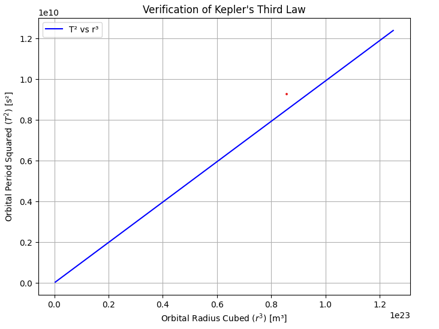
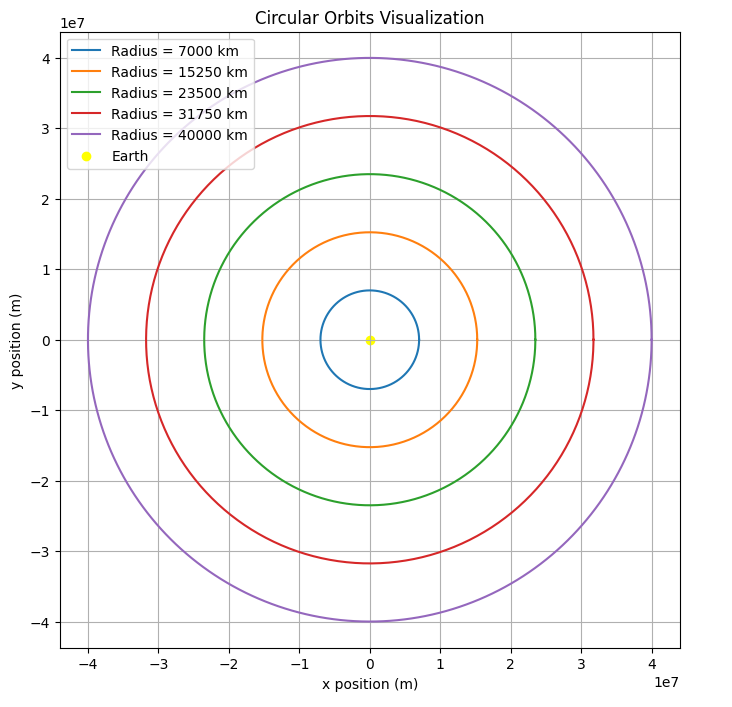
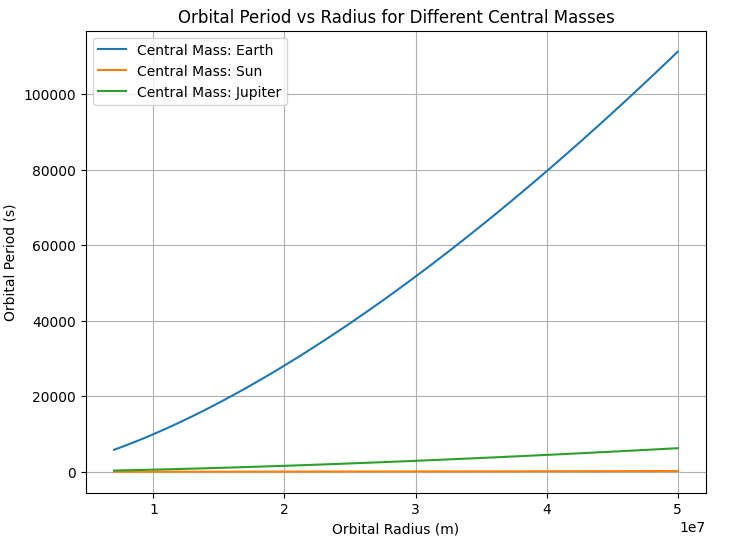

Gravity: Orbital Period and Orbital Radius
1. Motivation
The relationship between the square of the orbital period (\(T^2\)) and the cube of the orbital radius (\(r^3\)) is known as Kepler's Third Law.
This fundamental connection is crucial for:
- Understanding the motion of planets and moons,
- Designing artificial satellite orbits,
- Measuring planetary masses,
- Predicting the behavior of exoplanets and stellar systems.
Kepler's Third Law connects local phenomena (e.g., Moon orbiting Earth) to cosmic scales (e.g., stars orbiting galactic centers).
2. Deriving Kepler's Third Law for Circular Orbits
Consider a small body of mass \(m\) orbiting a much larger body of mass \(M\) (like a satellite orbiting Earth).
2.1 Gravitational and Centripetal Forces
The gravitational force provides the necessary centripetal force:
Setting them equal:
Simplifying:
2.2 Orbital Period
The orbital period \(T\) is the time to complete one full orbit:
Substituting for \(v\):
Squaring both sides:
Thus:
where the proportionality constant depends on \(G\) and \(M\).
3. Implications for Astronomy
Kepler's Third Law allows scientists to:
-
Determine Masses:
If we know \(r\) and \(T\) for a moon, we can calculate the mass \(M\) of the planet. -
Estimate Distances:
Observing orbital periods helps calculate orbital radii. -
Compare Orbits Across Systems:
From Earth satellites to extrasolar planets. -
Predict Satellite Behavior:
Essential for communication, weather, and navigation satellites.
4. Real-World Examples
4.1 The Moon's Orbit Around Earth
- Orbital radius: \(r \approx 384,400\, \text{km}\)
- Orbital period: \(T \approx 27.32\) days
Using the derived formula:
We can compute Earth's mass accurately.
4.2 Planetary Orbits in the Solar System
- Earth's orbit:
- \(r \approx 1.496 \times 10^{11}\, \text{m}\)
- \(T = 1\) year
- Jupiter's orbit:
- \(r \approx 7.78 \times 10^{11}\, \text{m}\)
- \(T = 11.86\) years
Verifying \(T^2 \propto r^3\) holds perfectly across the Solar System.
5. Computational Model: Simulating Circular Orbits
5.1 Python Code: T² vs r³ Verification
import numpy as np
import matplotlib.pyplot as plt
# Constants
G = 6.67430e-11 # Gravitational constant (m^3 kg^-1 s^-2)
M = 5.972e24 # Mass of Earth (kg)
# Function to calculate orbital period
def orbital_period(r):
return 2 * np.pi * np.sqrt(r**3 / (G * M))
# Generate orbital radii
radii = np.linspace(7e6, 5e7, 100) # Radii from 7000 km to 50000 km
periods = orbital_period(radii)
# Plot T² vs r³
plt.figure(figsize=(8, 6))
plt.plot(radii**3, periods**2, label="T² vs r³", color='blue')
plt.xlabel("Orbital Radius Cubed ($r^3$) [m³]")
plt.ylabel("Orbital Period Squared ($T^2$) [s²]")
plt.title("Verification of Kepler's Third Law")
plt.grid(True)
plt.legend()
plt.show()

5.2 Python Code: Visualizing Circular Orbits
# Plot Circular Orbits
theta = np.linspace(0, 2*np.pi, 500)
plt.figure(figsize=(8,8))
for r in np.linspace(7e6, 4e7, 5):
x = r * np.cos(theta)
y = r * np.sin(theta)
plt.plot(x, y, label=f'Radius = {r/1000:.0f} km')
plt.scatter(0, 0, color='yellow', label='Earth')
plt.xlabel("x position (m)")
plt.ylabel("y position (m)")
plt.title("Circular Orbits Visualization")
plt.legend()
plt.grid(True)
plt.axis('equal')
plt.show()

6. Explanation of the Graphs
6.1 T² vs r³ Plot
- As \(r^3\) increases, \(T^2\) increases linearly.
- This confirms the derived relation \(T^2 \propto r^3\).
6.2 Circular Orbit Visualization
- Different orbital radii are shown as concentric circles.
- Larger radii correspond to longer orbital periods.
7. Extension to Elliptical Orbits
Kepler's Third Law generalizes to elliptical orbits:
where:
- \(a\) is the semi-major axis of the ellipse.
Important differences: - Speed varies along the orbit. - Energy conservation governs the motion.
Despite elliptical paths, the \(T^2 \propto a^3\) relationship remains valid!
8. Additional Simulations
8.1 Orbital Period for Different Central Masses
def orbital_period_mass(r, M):
return 2 * np.pi * np.sqrt(r**3 / (G * M))
# Different masses (Earth, Sun, Jupiter)
masses = [5.972e24, 1.989e30, 1.898e27] # kg
labels = ['Earth', 'Sun', 'Jupiter']
r = np.linspace(7e6, 5e7, 100)
plt.figure(figsize=(8,6))
for M_val, label in zip(masses, labels):
T = orbital_period_mass(r, M_val)
plt.plot(r, T, label=f'Central Mass: {label}')
plt.xlabel("Orbital Radius (m)")
plt.ylabel("Orbital Period (s)")
plt.title("Orbital Period vs Radius for Different Central Masses")
plt.legend()
plt.grid(True)
plt.show()

9. Frequently Asked Questions (FAQ)
Q1: Why is Kepler’s Third Law important?
It connects orbital size and period, allowing mass and distance measurements across space.
Q2: Does satellite mass affect \(T\)?
No. The satellite mass \(m\) cancels out from the equations.
Q3: How accurate is Kepler’s Law today?
Very accurate for two-body systems; minor deviations occur due to perturbations and relativity.
Q4: How does \(M\) affect \(T\)?
Higher \(M\) results in shorter periods for the same \(r\).
Q5: Does Kepler's Law apply to galaxies?
It approximately applies, but galaxies involve more complex dynamics like dark matter effects.